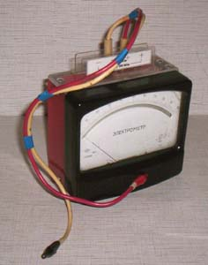
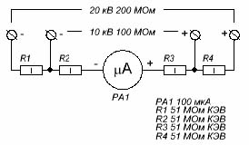
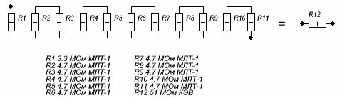
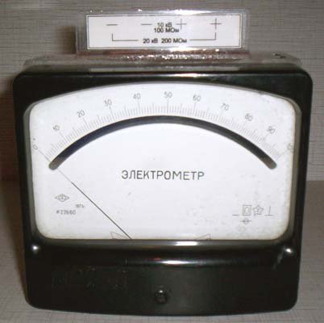
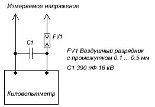

Аналоговый киловольтметр постоянного напряжения с диапазонами измерения 10 и 20 кВ

Несложный аналоговый киловольтметр может использоваться для оперативного контроля или измерения высокого напряжения при конструировании, эксплуатации и ремонте высоковольтных источников питания [1] или преобразователей [2], высоковольтных емкостных накопителей энергии, а также при проведении экспериментов, в которых применяется высокое напряжение.
Технические характеристики:
Схема электрическая принципиальная
Схема электрическая принципиальная киловольтметра представлена на рис.1.

Рис. 1. Схема электрическая принципиальная аналогового киловольтметра постоянного напряжения с диапазонами измерения 10 и 20 кВ.
В качестве индикатора PA1 используется микроамперметр с диапазоном измерения тока 100 мкА. К нему подключены дополнительные высоковольтные резисторы типа КЭВ. Величина сопротивлений этих резисторов определяется диапазоном измеряемого напряжения и током полного отклонения стрелки микроамперметра. Каждый из высоковольтных резисторов может быть заменен цепочкой низковольтных в соответствии со схемой рис. 2.

Рис. 2. Схема замены одного высоковольтного резистора цепочкой низковольтных.
Конструкция
Стрелочный индикатор (микроамперметр) устанавливается в корпусе, сделанном из изоляционного материала. К клеммам индикатора крепятся платы из фольгированного текстолита, на которых смонтированы высоковольтные резисторы. Выходные клеммы прибора прикрыты планками из изоляционного материала для безопасности оператора. Для подключения прибора к измеряемой цепи используются высоковольтные шнуры.

Рис. 3. Аналоговый киловольтметр (вид спереди).
Способы применения
При проведении измерений следует соблюдать осторожность и производить все подключения и отключения, обесточив предварительно источник высокого напряжения и разрядив все конденсаторы, которые могли накопить заряд.
Если внутреннее сопротивление киловольтметра недостаточно велико для проведения измерений, можно воспользоваться схемой рис. 4, в которой накопительный конденсатор, к которому подключен прибор, заряжается через искровый разрядник с небольшим расстоянием между электродами.

Рис. 4. Возможная схема измерения высокого напряжения с использованием искрового разрядника.
Ссылки:
15.10.2010
15.02.2018
Альтернативные источники
энергии
Компьютеры и
Интернет
Магнитные поля
Механотронные системы
Перспективные
разработки
Электроника и технология